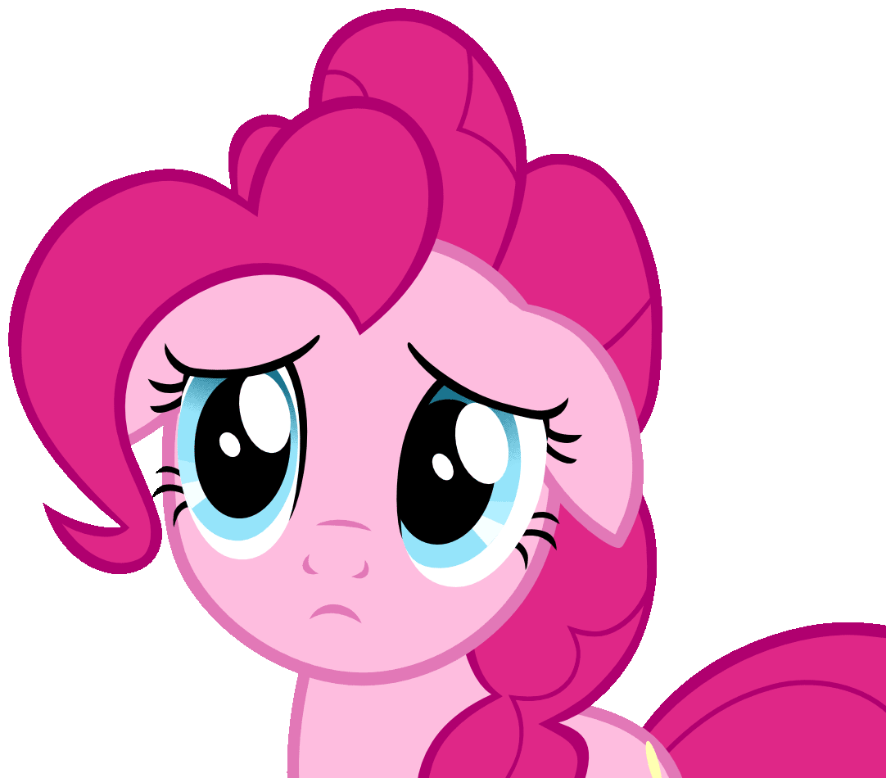

i wanted to say some stuff on my end about the talk we had before. i dont think i really conveyed what i was trying to say very well because i wasnt thinking about it as clearly while i was typing as i am now. i feel like it probably came across as something like we think the air feels heavy when youre around, or that i was trying to get you to join the server or talk to the girls. thats not what i was trying to say at all, and i really wanted to correct that because i would hate for you to think thats how i see you.
what i was feeling was that the distance between you and the group felt like something that was separating us and i didnt like seeing you left out. i understand why being left out of the server hurt you, and i dont blame you for being upset about it at all. i know that probably hurt more than i was giving it credit for, and i never meant to make you feel like i was telling you that you to get over it.
i was really trying to communicate that i dont want to lose you. youre genuinely important to me, and i dont think ive done a very good job of expressing just how much i care about having you in my life. i feel like in trying to talk about everything, i ended up pushing you away personally, and thats something ive been thinking about a lot because the last thing i ever wanted was for you to feel unwanted by me.
i hold you guys to certain standards because youre my closest friends, but i think little things matter a ton to me because i care about you all so much. when youre gone i notice it and it feels heavy. i dont want you to start to dislike any of us. your recent absence has been getting to me because i miss you. i mean everyone misses you.
i dont want you to think that means i expect you to be around people you dont want to be around or that i want you to force yourself into that server. thats not what i want. i dont want you to have to change yourself or ignore how you feel just to make me happy. i just want you to know that i really like having you around and talking with you.
i dont really know how to explain this kind of thing without making it sound way more serious than i mean it to be. just know that i care about you a lot. i got so caught up in explaining everything else that i ended up making it sound completely different.
i didnt want you to walk away from that conversation thinking i was trying to say that you make everyone uncomfortable or that i was trying to force you to join a server or that i wanted you to change anything about yourself. i wanted to be honest about something that was hurting me while also making sure you knew that none of it changed how much i care about you.
i want you in my life and to keep having conversations with you even if theyre short. i just wish i had been better at saying that. this goes for everyone by the way everyone misses you a ton.

click pinkie to continue